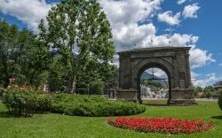
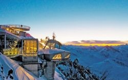

Benvenuti a Fénis
Il nostro appartamento è il punto di partenza perfetto per esplorare la Valle d'Aosta. A pochi minuti dal famoso Castello di Fénis, vicino ad Aosta e alle montagne più spettacolari della regione.
Prenota il soggiorno Contattaci su WhatsApp📸 L'appartamento


Servizi e comfort
Wi-Fi gratuito
Cucina attrezzata
Smart TV
Lavatrice
Parcheggio
Self check-in
Servizi extra
Cesto colazione
Lavanderia express
Noleggio bici
Escursioni guidate
🏰 Attrazioni vicino a Fénis
Castello di Fénis

Città di Aosta

Parco Nazionale Gran Paradiso

Skyway Monte Bianco
Esperienze da non perdere
- Trekking panoramici
- Noleggio e-bike
- Degustazioni vini valdostani
- Visita ai caseifici della Fontina
- Sci e ciaspolate
- Relax alle terme
🗺️ Mappa della zona
🍝 Consigli enogastronomici

La Chatelaine
Cucina valdostana
Cucina valdostana

Comtes de Challant
Ristorante tipico
Ristorante tipico

Gelateria artigianale

Pasticceria locale
Prenota il tuo soggiorno
Contattaci direttamente oppure prenota tramite la piattaforma che preferisci.
Prenota su Airbnb Prenota su Booking Contattaci su WhatsApp